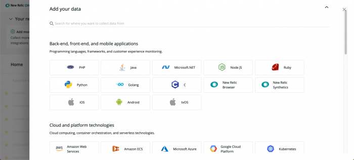

To give us immediate feedback: At the top of any New Relic One UI page, click the comment icon.
To give us immediate feedback: At the top of any New Relic One UI page, click the comment icon.
Welcome to New Relic One! We’ve streamlined and enhanced your Full-Stack Observability platform to make it open, connected, and programmable. This transition guide explains how to take advantage of new capabilities to achieve the same goals you’re used to doing in New Relic, and more!
We will continue to improve and simplify your experience with the New Relic One platform. As always, we're here to help, and we also want to learn what you like and dislike about your new experience.
Want to view our UI in dark mode? Learn how to switch between a dark or light theme.
To give us immediate feedback: At the top of any New Relic One UI page, click the comment icon.
Whether you're a software engineer, part of an operations team, a site reliability engineer, or an executive, you must keep your business running and your customers satisfied. Watch this video (approx. 3:30 minutes) to start making the transition to New Relic One.
With New Relic One, you can quickly and easily:
Learn more for a successful transition:
New Relic One is a unified user experience that makes it easier for you to navigate the platform, find and diagnose problems, and take advantage of new, more powerful features. To get started, go to one.newrelic.com or one.eu.newrelic.com as applicable.

To customize your New Relic One experience, you can add your favorite apps, teams, and other resources to your homepage.
From the New Relic One homepage, you can:
If your New Relic One homepage is blank when you first visit it, add your favorite apps, services, teams, etc. to it. Then the homepage will have everything important about your ecosystem's resources in one place, including their current health, alert patterns and violations, and links to more details and resources.
Learn more for a successful transition:
New Relic One gives you a single platform that unites your telemetry data, connects your full-stack resources, and helps you build more perfect software. We've organized the homepage so you can navigate the UI in any way that best fits your needs.

Navigate the UI
Tips for a successful transition
Unified view on homepage
In the previous UI experience, you had to go to separate pages to view your applications (via rpm.newrelic.com) or view your hosts and integrations (via infrastructure.newrelic.com). The new UI combines all of your full-stack monitoring needs on a single homepage for fast, easy access.
When you go to one.newrelic.com or one.eu.newrelic.com, you see links to all of your resources. You can also query your telemetry data, create charts, and share your dashboards from here.
Entity explorer
The entity explorer link in the top nav takes you to all of your services, hosts, applications, and groups. You can quickly search and filter, select favorites, review metadata, and get color-coded health status at a glance.
If you need to copy your GUID in the metadata and it truncates, use CMD C (Mac) or CTRL C (Windows).
Global search
You can search across all apps and resources with the global search feature at the top of the homepage. You can also search across all data types reporting to New Relic. Whether it's a dashboard, an application, a host, a synthetic script, or a cloud service, one search can find them all.
Online help
To view documentation and support resources directly in the UI: At the top of any page, click the question
icon.Customizable experience

We've moved the app launchers to their own experience. From the homepage, click the apps icon, then:
UI views toggle
If the original UI view has a feature or functionality you want, or if New Relic One presents a feature that you preferred in the original view, you can toggle between experiences at the top right of the page.
Learn more for a successful transition:
New Relic One has multiple ways to query and chart your data from the Dashboards link on the top nav. That's why Insights is not listed there. However, you can still access your old Insights dashboards and data from the More dropdown at the top of the homepage, or simply click Dashboards. Learn more about how to make the transition from Insights to New Relic One.
 Get data from your stack flowing into New Relic from a single location, and stay up to date with the latest agents, integrations, and reporting services.
Get data from your stack flowing into New Relic from a single location, and stay up to date with the latest agents, integrations, and reporting services.

When you click Add more, New Relic One presents a unified page where you can extend your instrumentation with any programming languages and frameworks you need.
The UI immediately provides interactive steps to select the languages and frameworks you need.
Extend your instrumentation
Comments
Front-end and back-end monitoring
Programming languages, frameworks, and customer experience monitoring for:
Cloud and platform technologies
Cloud computing, container orchestration, and serverless technologies, including Amazon Web Services (AWS), Amazon ECS, Microsoft Azure, Google Cloud Platform, Kubernetes, and Lambda
Host operating systems
Linux and Windows systems, including Amazon Linux, CentOS, CoreOS, Debian, RHEL, SLES, Ubuntu, and Windows Servers
Log ingestion
Plugins for log aggregators and log forwarders, including Fluentd, AWS Cloudwatch, Logstash, Fluent Bit, and AWS FireLens
Infrastructure
Data stores, message brokers, proxy servers, and other services
Open source monitoring systems
Integrations to other telemetry collection systems, such as JMX, Nagios, Prometheus, SNMP, StatsD, Kamon, Micrometer, and OpenTelemetry
Learn more for a successful transition:
Collect, explore, and alert on all your metrics, events, logs, and traces from any source with our open and unified telemetry database. Automatic integrations for open-source tools enable easy setup, eliminating the cost and complexities of hosting, operating, and managing additional monitoring systems or data stores.
To use a single resource where you can explore any data type, including metrics, events, logs, and traces: At the top of any New Relic One page, click the Query your data icon.

We offer several ways to help you explore your data:
TIMESERIES.

From the New Relic One data explorer page, you can navigate all data types, or you can click query builder to query, visualize, and share this data.
Learn more for a successful transition:
If you feel more comfortable navigating from Insights while making the transition from Insights to New Relic One: At the top of any New Relic One page, select More > Insights.
Everything is interconnected with New Relic One. The relationships between your apps, services, and alerts are all combined in a single, unified user interface. You get a holistic picture of your entire technology ecosystem, especially when problems are detected.

New Relic One's Alerts & AI link gives you a single starting point to identify, troubleshoot, and prevent problems across your ecosystem before they impact your customers.
For example:
Learn more for a successful transition:
New Relic was founded by developers for developers, and that mindset is still a cornerstone of our mission. We have centralized our resources to deliver the code where you can more easily access, customize, and contribute to it.

For example, developer.newrelic.com, our developer hub, helps you build apps and other solutions. You can customize the data you want to see, visualized the way you want to see it.
The developer site is open source, and we welcome your input and requests for content! We have a growing selection of guides to help you get started and try out several development tasks to:

Through opensource.newrelic.com, we are creating a community of developers and a library of open source projects (more than 180 at last count). This site will help you get the precise data you need and visualize it the way you most want to see it.
We also recognize developer expertise and leaders in the technical community through our developer champion program. Check it out and get involved!
Learn more for a successful transition:
Many changes to your UI experience are related to functions and features that reached end of life (EOL). For more information, including action items to help you make a successful transition from your EOL experience to your new experience in New Relic One, see the July 2020 EOL announcements.